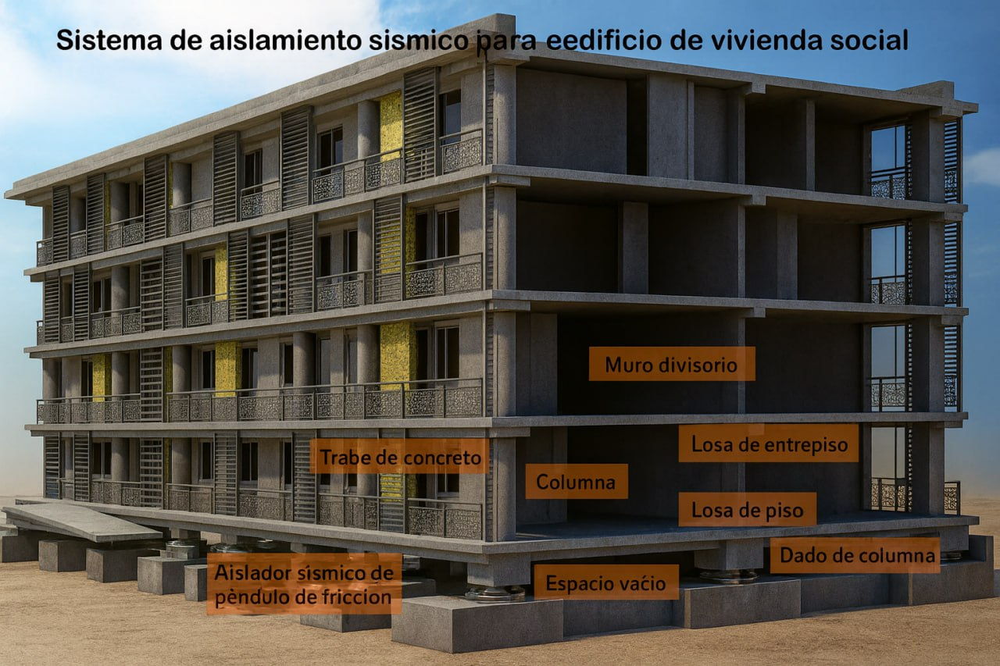
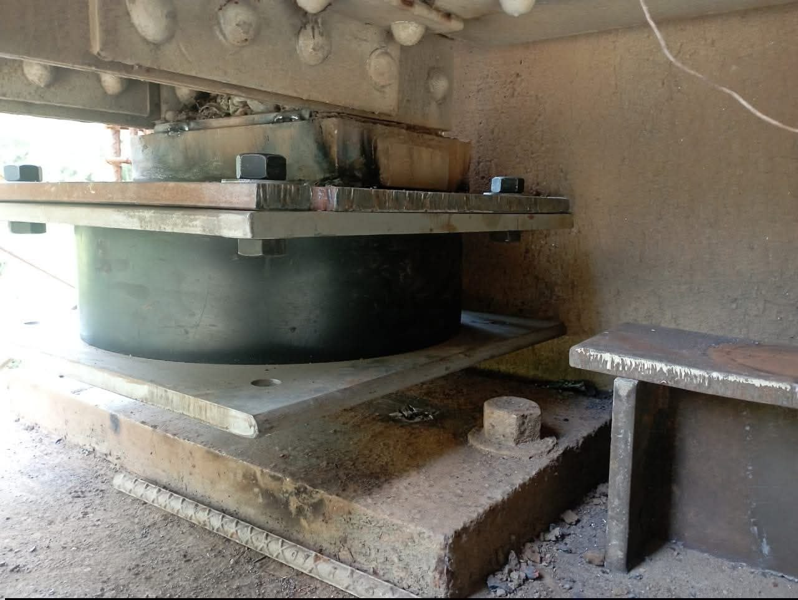
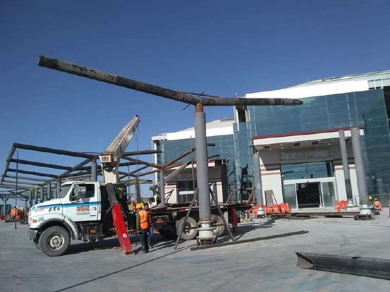
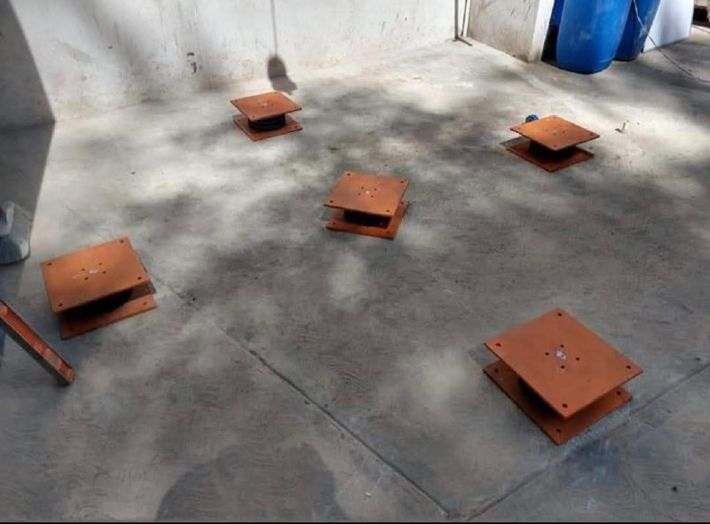

Vivienda y desarrollos habitacionales
Para proteger la inversión, reducir daños y mejorar la seguridad de los ocupantes.

Oficinas y corporativos
Para disminuir pérdidas por interrupción y mejorar continuidad de operación.

Hospitales y edificios esenciales
Para estructuras que deben mantener funcionalidad después de un sismo.

Industria y logística
Para proteger equipos, procesos, inventarios y operación.

Infraestructura estratégica
Para proyectos que requieren alto desempeño estructural y operatividad confiable.

Estructuras existentes
Para inmuebles que necesitan evaluación y posibles estrategias de mejora.